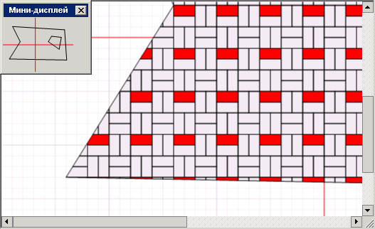
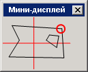
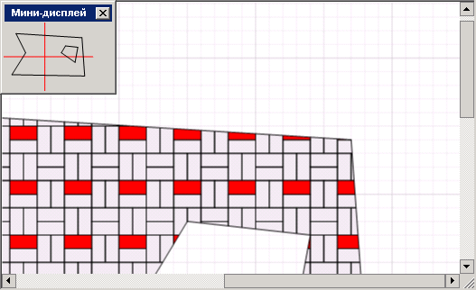

Функция мини-дисплей разработана для быстрого перемещения по большому чертежу. Там , где она доступна, в окне есть кнопка Мини-дисплей .
Она вызывает окно с уменьшенной копией рисунка. Щелчок мыши на нем приводит к тому, что окно чертежа перемещается в эту точку.
Например, мы находимся в левой нижней точке чертежа:

Если щелкнуть на мини-дисплее в выделенную на рисунке точку:

то чертеж сместится как показано ниже:

Окно мини-дисплея можно растягивать, что повышает точность позиционирования и перемещения.